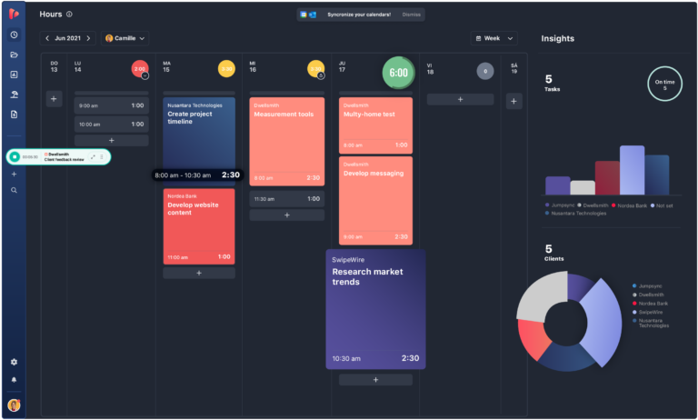
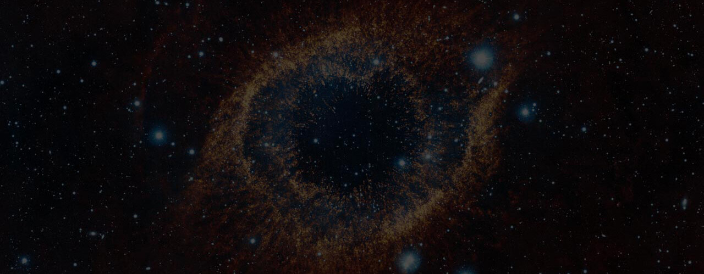
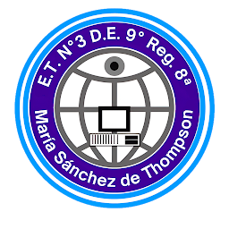
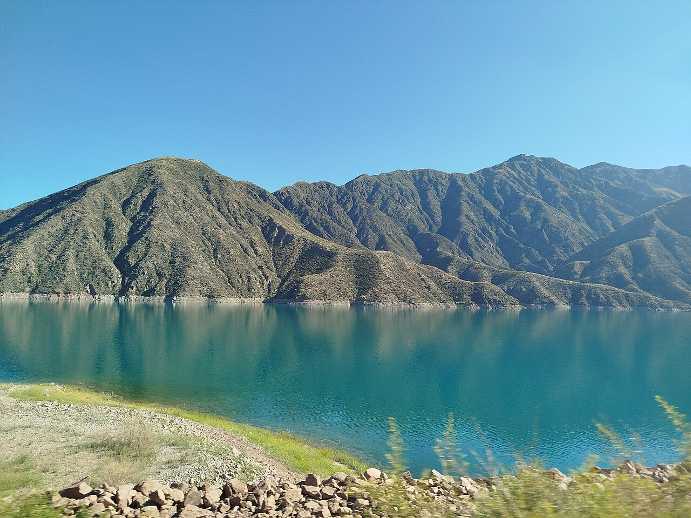
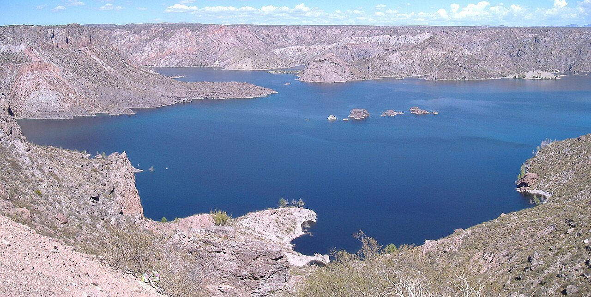

Java
Backend · Java 8–21
Mendoza, Argentina
Hola, soy Gabriel Espina.
Desarrollo backend para aplicaciones SaaS y microservicios. Me gusta entender el producto y construir sistemas que funcionen bien en el día a día.
Actualmente en TrackingTime

Mi stack principal
Backend, microservicios y datos.
Backend · Java 8–21
APIs · Microservicios
Datos · Persistencia
01 / Experiencia
De interfaces bancarias a backend senior.
SaaS, telecomunicaciones, transporte y banca.
2025 — presente
ActualidadProducto SaaS
Desarrollo de funcionalidades y resolución de bugs complejos en un SaaS de alta demanda.
Java · MySQL · GitHub Actions
Delivery asistido por IA con Codex y MCP.

2021 — 2025
Claro · Nación Servicios / SUBE
CRM Java y microservicios para telecomunicaciones y transporte. Integraciones SOAP/REST y GCP.
Java · Spring Boot · PostgreSQL
2019 — 2021
SaaS · Banca
Procesos batch en Java/C++, Oracle, Vaadin y Docker. Soluciones ATM/ITM, Jira y discovery técnico con bancos.
Java / C++ · Oracle · Vaadin · Docker
2018 — 2019
ISBAN Santander
Frontend AngularJS e inicio profesional en noviembre de 2018. Bootcamp de Java, Maven e integraciones.
AngularJS · Java · Maven

Gabriel destaca por superar responsabilidades, adaptarse a los cambios, comprender información compleja y apoyar al equipo con aprendizaje continuo.
02 / Educación
Una formación vinculada a programación y sistemas, desde antes del primer trabajo.
2017 — 2018
Technical Degree in Programming.
2015 — 2016
Ingeniería en Sistemas.

2008 — 2014
Tecnicatura en Programación.
03 / Proyectos propios
Tecnología, comunidad
y problemas cotidianos.
Lo que pasa en tu barrio.
Una red social hiperlocal para conectar personas con alertas, mascotas, comercios y preguntas del barrio.
Feed cercano · Mapa · Filtros por cercanía
Visitar MUR (otra pestaña)Software para el día a día.
Ventas, stock, caja y reportes en un solo sistema. Un producto activo, usado en Kiosco Jardín 2.
Ventas · Inventario · Gestión comercial
Ver el proyecto (otra pestaña) Taninos Wine Fest · Córdoba
Taninos Wine Fest · CórdobaMendoza, también en una copa.
Sommelier virtual para descubrir vinos, bodegas, eventos y wine boxes. Una experiencia de aprendizaje de producto.
Vinos · Discovery · Experiencias
Conocer Tusom (Instagram, otra pestaña)04 / Fuera del código
Montaña, fútbol y alguna partida.
También soy esto.

Offline / 01
Un poco de montaña.
Otro ritmo.
Foto: BiblioJu · CC BY-SA 4.0 · Encuadre adaptado

Offline / 02
Escapadas a San Rafael.
Mendoza para recorrer.
Foto: Pablo D. Flores · CC BY-SA 2.5 · Encuadre adaptado

La pelota, siempre
Fútbol en Mendoza.
El otro plan para desconectar.
Online / Después del código
Mis otras formas de entrar en juego.
05 / Contacto
Para hablar de backend, productos o una oportunidad profesional.
gabyespina.ge@gmail.com